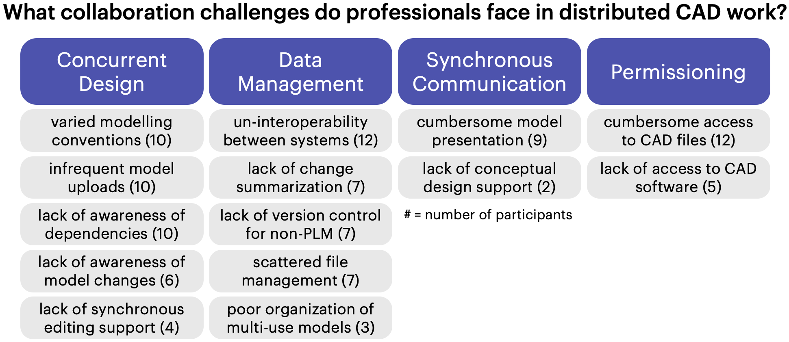
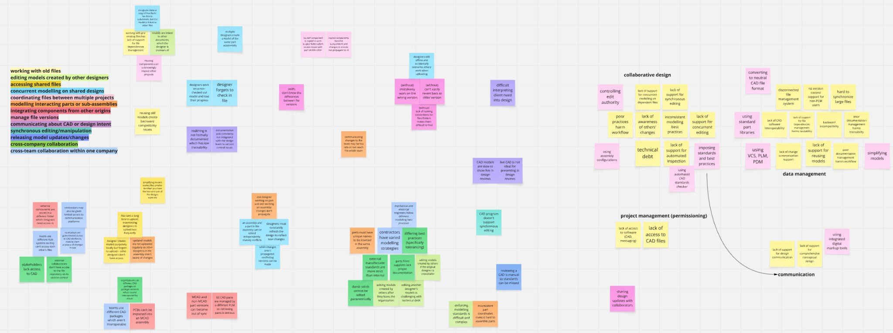

Closing the CAD Collaboration Gap
An in-depth interview study of distributed product team practices

Overview
As hardware development becomes increasingly distributed and cross-functional, collaboration has grown more complex — yet the core tool used to build products, computer-aided design (CAD), has not evolved at the same pace.
While vendors were investing in cloud and synchronous CAD, there was no systematic understanding of:
- Where distributed workflows actually break down
- Which collaboration issues are tooling vs process problems
- Why adoption of collaborative CAD remained slow
I led an in-depth interview study to investigate collaboration breakdowns in professional CAD workflows and identify where meaningful intervention is needed.
Goal
Move beyond anecdotal complaints about CAD collaboration and systematically answer:
- What collaboration challenges do professionals face in distributed CAD workflows?
- Where do current tools fall short?
- What workarounds have professionals developed in response to these challenges?
The broader aim was to inform future CAD tooling and collaboration infrastructure.
Process
Research Design
I conducted 20 semi-structured interviews with professional CAD practitioners:
- Interns to senior engineers to CEOs
- Aerospace, automotive, electronics industries
- Teams using both manual file management and enterprise PLM systems
Rather than asking directly about "pain points," I asked participants to walk through a recent real project from start to finish. Participants were prompted to describe frustrating, time-consuming, or risky collaboration moments.
This surfaced coordination failures organically within real workflows.
Analysis Strategy
We conducted three rounds of analysis:
- Open coding to identify breakdowns in specific workflow activities
- Challenge identification to isolate root causes
- Axial synthesis to group related challenges into higher-level systemic themes
I used Miro to conduct the affinity mapping and axial synthesis:

This process resulted in 14 collaboration challenges grouped into four structural domains:
- Collaborative design
- Synchronous communication
- Data management
- Permissioning
Rather than listing isolated usability issues, the outcome was a structured taxonomy of collaboration breakdowns.
Key Findings
The study surfaced recurring systemic patterns across industries and company sizes.
1. Collaboration Runs on Workarounds
Teams rely heavily on:
- Slack/email screenshots (redlining outside the system)
- Manual Excel change logs
- File duplication for branching
- Assembly configurations as informal sandboxes
These workarounds reduce traceability and accumulate technical debt.
2. Dependency Awareness Is Reactive
Designers often:
- Reuse legacy models without understanding linked artifacts
- Modify models without visibility into downstream impact
- Manually refresh files to avoid overwriting teammates
Dependency management is largely manual and error-prone.
3. Version Control Lacks Change Intelligence
PLM systems automate storage but do not:
- Summarize semantic differences between versions
- Surface change impact before release
- Highlight cross-document ripple effects
Designers must manually reconstruct what changed.
4. CAD Is Used for Communication — But Isn't Designed for It
During design reviews:
- Navigating live models is slow and fragile
- Stakeholders without CAD access rely on screenshots
- Model orientation and feature visibility require manual manipulation
CAD functions as a communication tool without communication affordances.
Impact
This project had three major outcomes:
1. Reframed the Problem Space
Shifted the conversation from isolated usability issues to structural coordination failures — particularly dependency visibility and traceability.
2. Informed Subsequent Tool Development
The dependency-awareness findings directly motivated later prototype development focused on visualizing and managing model dependencies.
3. Established a Strategic Roadmap
Clarified which collaboration challenges require:
- Tooling improvements
- Organizational standards
- Management processes
This provided a framework for prioritizing infrastructure investments rather than incremental feature tweaks.
Reflection
This study shifted my lens from "feature gaps" to "coordination visibility." I now look for the social workarounds teams build around tools — because those often reveal the real design opportunity. If teams are going through the trouble of developing temporary solutions, it must signal a persistent pain point. Improving complex systems is rarely about adding capability; it's about reducing hidden friction.